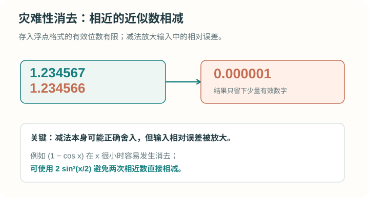

CHAPTER 02 · NUMERICAL ANALYSIS
浮点误差、条件数与数值稳定性
同一个数学公式可能对应两种截然不同的浮点计算结果。学会用消去误差、条件数和后向误差判断问题与算法。
01 · 减法为什么丢失了有效数字？
考虑两个已经舍入的近似量 1.234567 与 1.234566。它们的差为 0.000001，只有很少的有效数字保留下来；若原始输入的最后几位含误差，这些误差相对于结果就可能很大。减法本身即使遵守正确舍入，输入误差仍可能被放大。

一个经典例子是计算 1−cos(x)：当 x 很小时，cos(x) 非常接近 1。改写成数学等价的 2sin²(x/2) 可以避免直接相减两个相近量。具体改写是否改善精度，还需要根据输入范围和函数库实现核对。
02 · 先问问题本身是否病态
给定标量映射 y=f(x)，如果输入发生很小的变化 Δx，输出会如何变化？对于可微且 x≠0,f(x)≠0 的局部情形，可以用相对条件数衡量输入相对误差被放大的程度：
条件数是问题与指定输入输出尺度的属性，不取决于你用 Python、C++ 还是纸笔计算。同一个问题可以选用不同的算法，但条件数反映的问题敏感性不会因为换代码而消失。
03 · 前向误差与后向稳定性
设程序对输入 x 输出 ŷ，理论目标为 f(x)。前向误差直接比较 ŷ 与 f(x)。后向误差问是否存在一个很小的输入扰动 Δx，使得 ŷ=f(x+Δx) 恰好成立。若可用很小的后向扰动解释输出，便可能称算法为后向稳定，但还须说明范数、允许扰动的数据与统一误差界。
在小扰动、局部可微、相对尺度有定义的条件下，常有如下一阶近似关系：
04 · 二次方程中的稳定改写
求二次方程 x²−10⁹x+1=0 的较小正根。直接使用求根公式需要从 10⁹ 中减去几乎同样大的平方根，在 binary64 中可能得到 0。将分子有理化，数学表达式保持等价，但浮点计算路径改变了。
import math
b=1e9
d=math.sqrt(b*b-4.0)
naive=(b-d)/2.0
stable=2.0/(b+d)
print(naive, stable)
assert naive==0.0
assert math.isclose(stable,1e-9,rel_tol=1e-14)这只证明该输入下代数改写的收益，不代表有理化表达式对任意巨大或微小系数都没有上溢、下溢或判别式误差。工程求根器仍需要缩放、符号判断等额外设计。
05 · 将数值风险变成可以检查的准则
遇到相近数相减，检查是否存在保持数值信息的等价表达式；遇到巨大与微小数混合，考虑缩放、专用库函数和溢出边界；遇到累加，考虑顺序与补偿求和；遇到高次多项式，评估 Horner 法减少运算是否有助于误差控制。
运算次数少不自动保证稳定。 最终仍应回到条件数、误差界、残差、极端测试以及参考实现来判断算法是否可信。
原始资料与延伸阅读
以下资料用于核查理论、适用前提和计算语义。图示和数值例子为独立制作的教学演示。
- David Goldberg, What Every Computer Scientist Should Know About Floating-Point Arithmetic。ACM Computing Surveys 1991 论文的公开重印。
- Nicholas J. Higham, Accuracy and Stability of Numerical Algorithms。SIAM 第二版，2002；误差、条件与算法稳定性。